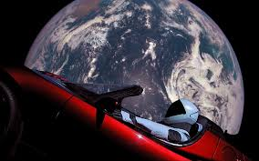

<script src="https://cdn.freecodecamp.org/testable-projects-fcc/v1/bundle.js"></script>
<main id="main">
    <head id="header">
    <h1 id="tittle"> Elon Musk Tribute Page</h1>
     <p>The man that will take us to MARS! </p>
    </head>
    <body id="body">
        <figure id="img-div"></figure>
            
            <figcaption id="img-caption">
              Startman in front of planet Earth
            </figcaption>
        </figure>
        <section id="tribute-info"> 
            <h2 id="headline">The life of Elon Musk</h2>
            <ul>
                <li><strong>1971</strong> Born in South Africa</li>
                <li><strong>1990</strong> Moved to University of Pennsylvania to study Economics and Physics</li>
                <li><strong>1995</strong> Co-founded Zip2</li>
                <li><strong>1999</strong> Founded X.com</li>
                <li><strong>2002</strong> Founded SpaceX</li>
                <li><strong>2006</strong> Helped create SolarCity</li>
                <li><strong>2015</strong> Co-created OpenAI</li>
                <li><strong>2016</strong> Co-founds Neuralink and Boring Company</li>
            </ul>
        </section>
    
    
    </body>
    <footer>
    </footer>
</main>